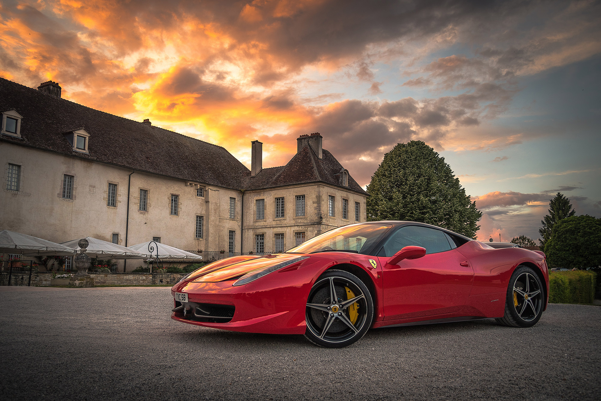

Since the early 1920’s Ferrari used red as their International racing color, as customary for all Italian cars during this time. Ferrari cars were painted Rosso Corsa which directly translates to race red. Decades later, the tradition of all red Ferrari race cars saw a change at the 1961 Belgian Grand Prix. Oliver Gendebien, a Belgian driver, entered a yellow Ferrari 156 and placed fourth behind 3 other red Ferrari 156s fielded by the Scuderia Ferrari team. Several years later in 1964, a US Formula 1 driver named John Surtees entered his NART (North American Race Team) Ferrari 158 in a race painted white and blue, in a protest concerning an argument with Italian racing authorities. This provided a stark contrast to the other red Ferrari cars in the field. National colors were mostly replaced completely by commercial sponsor liveries in 1968. Unlike most other European car manufacturers Ferrari elected to continue to use their signature Rosso Corsa color as a staple of the brand.
Over 70 years ago Enzo Ferrari created his first masterpiece, and he originally had chosen yellow to be the symbolic color of his stable. This yellow shade which accompanies the famous prancing horse shield is also associated with his home city of Modena, Italy. Although not as storied as Ferrari red, this original yellow still remains one of the most distinct Ferrari colors in road cars. The signature yellow shade of today is Giallo Modena but it is flanked by modern interpretations as well including Giallo Triplo Statro, a triple-layer pearlescent paint that adds distinctive elegance to any Ferrari vehicle.
The historic Tour de France race took place between 1899 and 1986, and Ferrari dominated during the 1950s, winning 9 times. Ferrari fielded the 250 GT for these long cross-country races, and the 250 went on to become one of the most celebrated group of race cars ever created. This model exceeded the benchmark expectation for style, comfort, and performance. Nearly all of the cars that Ferrari campaigned during this time period used a shade of blue which later became known as Tour de France blue. This now historic color is synonymous with Ferrari racing greatness.
Enzo couldn’t help but also create colors that directly represented his family, and for his son Dino Ferrari’s name he created Rosso Dino, a non-metallic reddish-orange paint. This color sample found itself on several early cars such as the 246 GT Dino, 365 Daytona, and many more. This historic color laid dormant for decades until one customer sat down and built a One-of-One Enzo after Ferrari pulled the paint code from the archives. After this triumphant return of Rosso Dino newer cars such as the F12berlinetta, Ferrari 458, and California T have been layered in this color as well. Behind every classic Ferrari paint color is a storied history, any many more special colors from Ferrari’s past are lying in wait.
 Back to Course Home Page